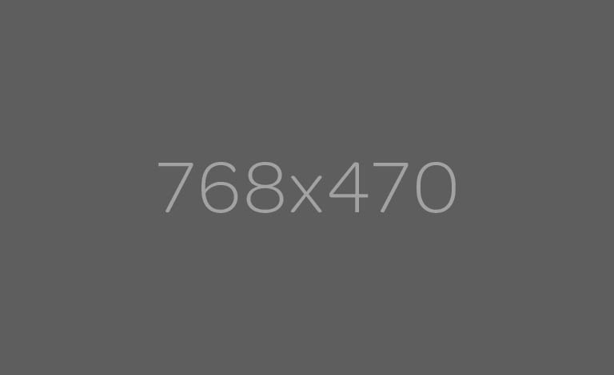

<div class="container" id="main-container">

        <att-carousel interval="myInterval">
                          <att-slide ng-repeat="slide in slides" active="slide.active">
                              
                            <div class="carousel-caption">
                              <h4>Slide {{$index}}</h4>
                              <p>Slide text</p>
                            </div>
                          </att-slide>
                        </att-carousel>


</div>

<div class="container" id="details-container">
    <div class="row">
        <div class="col-md-6">
            <button type="button" class="btn btn-info" ng-click="addSlide()">Add Slide</button>
        </div>
        <div class="col-md-6">
            Interval, in milliseconds:
            <input type="number" class="form-control" ng-model="myInterval">
            <br />
            Enter a negative number to stop the interval.
        </div>
    </div>
</div>